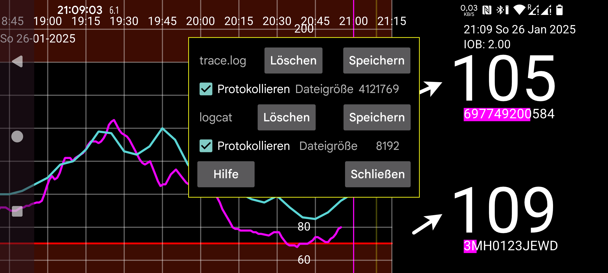

Dies ist eine Protokollierungsversion von Juggluco. Protokolldateien können in /data/data/tk.glucodata/files/logs erstellt werden.
trace.log enthält Protokollnachrichten, die Juggluco selbst erstellt. logcat.txt enthält Protokollnachrichten, die Android in Bezug auf Juggluco erstellt. Sie können sie separat löschen und speichern.
Wenn Probleme auftreten, können Sie trace.log und logcat.txt zusammen mit einer Beschreibung der Probleme, die während des Zeitraums aufgetreten sind, in dem diese Protokolldateien erstellt wurden, an jaapkorthalsaltes@gmail.com senden.
Dateigröße: Größe der Protokolldatei
Protokollieren: Aktivieren Sie die Protokollierung in trace.log oder logcat
Löschen: Löschen Sie die Protokolldatei
Speichern: Speichert die Protokolldatei in einer Datei unter /sdcard